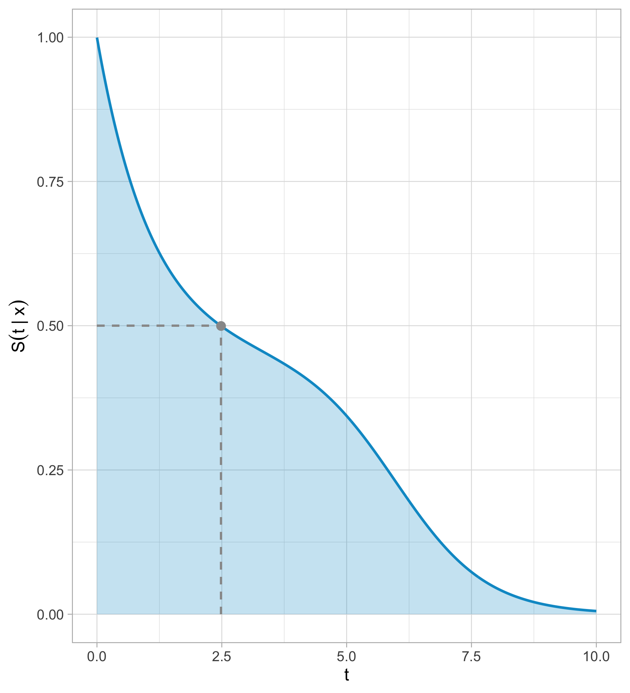
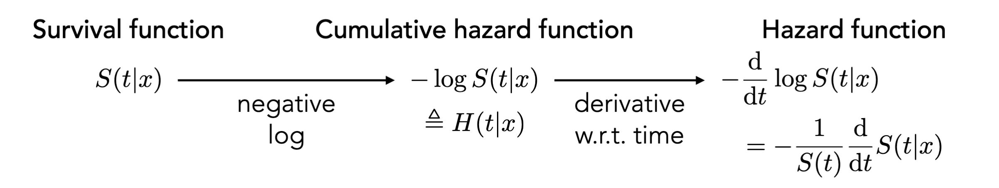
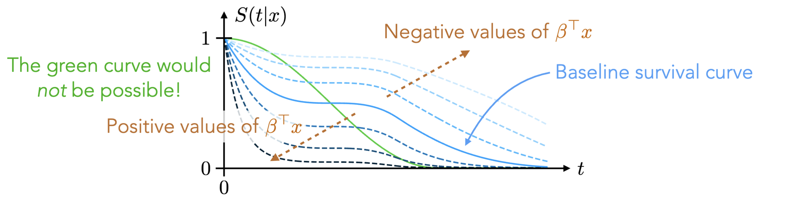
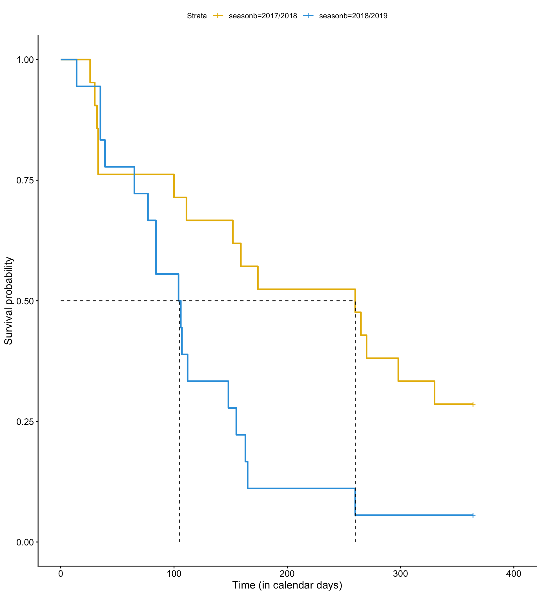
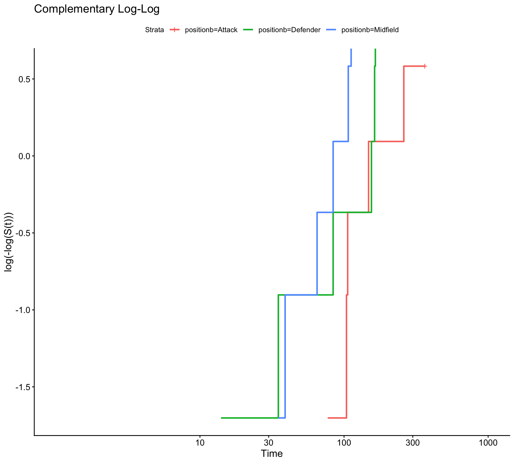
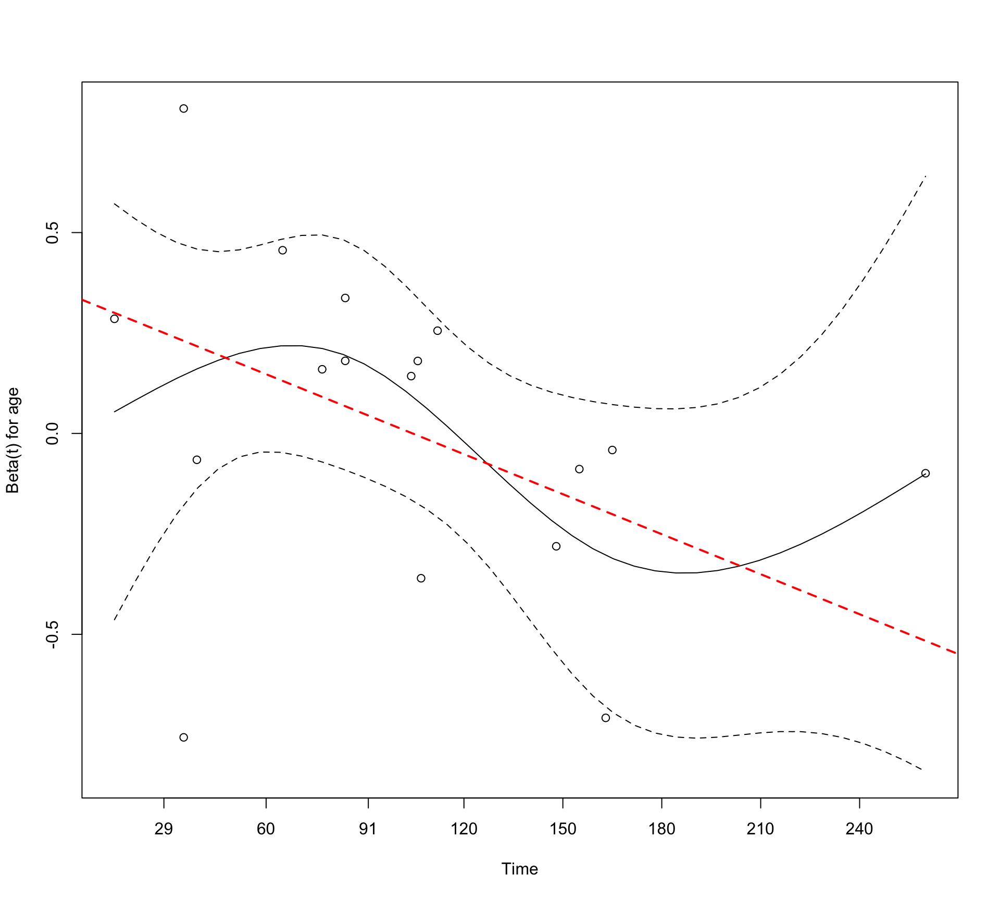

Previously:
Considered problems of the form: “model the relationship between \(X\) and \(Y\)”, where:
\(X\) and \(Y\) are completely observed
Make assumptions about the distribution of \(Y\) and the shape of the relationship
Example: use game- and shot-level features to predict goal probability
But not every statistical problem is of this form!
Suppose we want to model the time-to-event, where:
That time might be incompletely observed for certain observations/units (\(Y\) is not completely observed)
Each observation/unit can experience a certain event a maximum of one time
The field of survival analysis is about modeling time-to-event outcomes!
Time until injury
Time until an athlete transfers
Time until death
Time until a patient is discharged from the hospital
Time until a user cancels a subscription service
Time until a convicted criminal reoffends
Time until a PhD student graduates
In survival analysis:
We are interested in modeling the rate of the event-of-interest (not just if the event happened)
Generically, we call the event-of-interest failure (or death), i.e, we are interested in modeling failure (death) rates and risk of failure (death) for each observation
Suppose observe each observation \(i\) beginning at time zero. For each observation \(i\), there are two possible outcomes:
Case 2 is called censoring because the true time-to-event \(T_i\) is censored or unknown to us — all we know is that \(T_i > C_i\)
Technically, we focus on right-censoring, which is when we only know that \(T_i > C_i\).1
Censoring can happen for various reasons:
Example 1: a player leaves a team for financial reasons
Example 2: a player leaves a team because of recurring minor injuries or reduced fitness
So, why not just do a complete case analysis, where we filter out censored observations?
Filtering out censored observations is problematic for two reasons:
It throws away useful information: we lose useful information that they survived up until time \(C_i\)
It can bias analysis: an observation may be censored for reasons that are related to the event-of-interest (aka it may be informative)
In survival analysis, we are interested in modeling \(T_i\) while accounting for censoring
Data: Suppose we have \(n\) i.i.d observations of the following form:
\[(\mathbf{X}_1, Y_1, R_1), \dots, (\mathbf{X}_n, Y_n, R_n)\] where:
\(\mathbf{X}_i\): feature vector for unit \(i\) (e.g., age, position, minutes player)
\(Y_i\): either the observed time-to-event \(T_i\) or the censoring time \(C_i\) depending on what happened first (\(Y_i = \min\{T_i, C_i\}\))
\(R_i\): status of whether the event-of-interest occurred
\[ R_i = \begin{cases} 1 \quad \text{if } Y_i = T_i, \\ 0 \quad \text{if } Y_i = C_i \end{cases} \]
The survival function is defined as follows:
\[ S(t \mid \mathbf{x}) := \displaystyle \text{Pr}(T > t \mid \mathbf{x}) = \text{Pr}(\text{survive beyond time } t \mid \mathbf{x}) \]
Note:
\(S(t \mid x)\) declines as \(t \to \infty\):
For some events-of-interest that will necessarily happen (e.g., death): \(S(t \mid \mathbf{x}) \to 0\) as \(t \to \infty\)
For others events-of-interest where the event does not necessarily happen (e.g., injury): \(S(t \mid \mathbf{x})\) declines to some positive value (between zero and one) as \(t \to \infty\)
What the time-to-event outcome is matters for our interpretation:
For time until injury, longer is considered “better”
For time until a patient is discharged, longer is often considered “worse”
From the survival curve:
The median survival time of \(\mathbf{x}\) is where \(S(t \mid \mathbf{x}) = 1/2\)
The mean survival time of \(\mathbf{x}\) is the area under the survival curve: \(\displaystyle \int_0^\infty S(t \mid \mathbf{x}) dt\)

Kaplan-Meier curves are a popular estimator of survival curves
Let’s ignore the feature vector for now, so that our data is of the form: \((Y_1, R_1), \dots (Y_n, R_n)\)
First, we find all unique observed times in which event-of-interest occurred
\[ 0 < \tau_{(1)} < \tau_{(2)} < \dots < \tau_{(L)}, \qquad L = \text{# of unique event times} \]
Let:
\(n[m]\) denote number of observations that are “at risk” right before time \(\tau_{(m)}\)
\(d[m]\) denote the number of observations that “die” at time \(\tau_{(m)}\)
For observations “at risk” at the beginning of time \(\tau_{(m)}\), the probability of surviving that time is:
\[ p_m = \frac{n[m] - d[m]}{n[m] } \]
E.g., the probability that an observation survives to the second time \(\tau_{(2)}\), given they survived the first time \(\tau_{(1)}\) is:
\[ p_2 = \frac{n[2] - d[2]}{n[2]} \]
The probability that (at the outset) an observation survives to the second time \(\tau_{(2)}\) is:
\[ \begin{aligned} \text{Pr}(T > \tau_{(2)}) &= \text{Pr}(T > \tau_{(1)}) \cdot \text{Pr}(T > \tau_{(2)} \mid T > \tau_{(1)}) = \frac{n[1] - d[1]}{n[1]} \cdot \frac{n[2] - d[2]}{n[2]} = p_1 \cdot p_2 \end{aligned} \]
Therefore, the Kaplan-Meier estimate for the probability of surviving the first \(t\) days is:
\[ \hat{S}(t)_{\text{KM}} = \prod_{m = 1, \dots, L \text{ s.t. } \tau_{(m)} \leq t} \frac{n[m] - d[m]}{n[m]} = \prod_{m = 1, \dots, L \text{ s.t. } \tau_{(m)} < t} p_m \]
The Kaplan-Meier curve is a non-parametric estimator of the survival function — doesn’t assume a parametric form!
We can derive point-wise confidence intervals for Kaplan-Meier curves
There are extensions that allow us to add in feature vectors, i.e., that estimate \(S(t \mid \mathbf{x})\) using \(k\) nearest neighbor or kernel approaches
In practice, people often compare Kaplan-Meier curves across different levels of a categorical variable (e.g., position) in order to estimate the difference in survival probabilities between levels
Hazard rate: instantaneous rate of failure at time \(t\) for units that have survived up to time \(t\). When do not include features:
\[ \begin{aligned} \displaystyle h(t) &:= \lim_{\Delta t \to 0} \frac{\text{Pr}(t \leq T \leq t + \Delta t \mid T \geq t)}{\Delta t} \\ \displaystyle &= \lim_{\Delta t \to 0} \frac{\text{Pr}(t \leq T \leq t + \Delta t)}{\text{Pr}( T \geq t) \Delta t} \\ \displaystyle &= \lim_{\Delta t \to 0} \frac{S(t) - S(t + \Delta t)}{\Delta t} \cdot \frac{1}{S(t) } \\ &= - \frac{S(t)}{S(t)} \end{aligned} \]
Recall that \(\displaystyle - \frac{d}{dt}\text{log}(S(t)) = - \frac{S(t)}{S(t)}\). Therefore:
\[\displaystyle h(t) = - \frac{d}{dt}\text{log}(S(t)) \Leftrightarrow S(t) = \exp\left\{- \int_{0}^t h(u) du \right\}\]
Cumulative hazard: the integral of the hazard function. When do do not include features:
\[ \displaystyle H(t) := \int_{0}^t h(u) du \]
Therefore, \(\displaystyle S(t) = \exp\{- H(t)\} \Leftrightarrow H(t) = - \log(S(t))\)
Put together, using features \(\mathbf{x}\):

Nonparametric survival estimators (like Kaplan-Meier curves) are useful but do not directly help us answer this question
Assume the following factorization holds:
\[ h(t \mid \mathbf{x}) = h_0(t) \cdot \exp\{ \mathbf{x} \beta \} \]
where \(h_0(t)\) is the baseline hazard function, \(\mathbf{x}\) is a feature vector, and \(\beta\) is the associated parameter vector (just like in GLMs)
Cox proportional hazards (PH) model assumes that:
\[ h(t \mid \mathbf{x}) = h_0(t) \cdot \exp\{ \mathbf{x} \beta \} \]
implies that the hazard is proportional to the baseline hazard \(h_0\) for all \(\mathbf{x}\). Hence,
\[ \begin{aligned} \displaystyle S(t \mid \mathbf{x}) &= \exp\left\{- \int_{0}^t h(u \mid \mathbf{x}) du \right\} \quad \text{(our starting place)}\\ &= \exp\left\{- \int_{0}^t h_0(u) \cdot \exp\{ \mathbf{x} \beta \} du \right\} \\ &= \exp\left\{- \exp\{ \mathbf{x} \beta \} \cdot \int_{0}^t h_0(u) du \right\} \\ &= \left\{e^{-\int_{0}^t h_0(u) du} \right\}^{\exp\{ \mathbf{x} \beta \}} \\ &= S_0(t)^{\exp\{ \mathbf{x} \beta \}}, \quad S_0(t) := e^{-\int_{0}^t h_0(u) du} \end{aligned} \]
Under PH assumption, all survival curves must be powers of a baseline survival curve \(S_0(t)\)
Under PH assumption, survival curves must be powers of each other
When \(\mathbf{x} \beta = 0\), we get the baseline survival curve
When \(\mathbf{x} \beta > 0\) means shorter survival than the baseline
When \(\mathbf{x} \beta < 0\) means longer survival than the baseline

\[ \text{Schoenfeld resid}_i = x_{ik} - \bar{x}_k(\beta, t_i) \]
where:
\(x_{ik}\): \(k\)th feature for observation \(i\)
\(t_i\): observed “death” or “failure” time for observation \(i\)
\(\bar{x}_k(\beta, t_i)\): model-weighted average (or expected) value of the \(k\)th covariate among observations who are “at risk” right before \(t_i\)
If PH assumption holds, Schoenfeld residuals should show no systematic trend over time
\[ \widehat{\text{HR}} = \frac{h(t \mid x_1 + 1, \dots, x_p)}{h(t \mid x_1, \dots, x_n)} = \frac{h_0(t) \exp(\beta_0 + \beta_1 (x_1 + 1) + \dots + \beta_p x_p)}{h_0(t) \exp(\beta_0 + \beta_1 x_1 + \dots + \beta_p x_p)} = \exp(\beta_1) \]
\[ \displaystyle [\hat{\beta}_1 - 1.96 \cdot \text{SE}(\hat{\beta}_1), \hat{\beta}_1 + 1.96 \cdot \text{SE}(\hat{\beta}_1)] \]
\[ \displaystyle [ \exp(\hat{\beta}_1 - 1.96 \cdot \text{SE}(\hat{\beta}_1)), \exp(\hat{\beta}_1 + 1.96 \cdot \text{SE}(\hat{\beta}_1))] \]
The Cox PH model ranks data points by their hazard
\[ \begin{aligned} \mathbf{x}_1 &\longrightarrow \mathbf{x}_1 \beta \\ \mathbf{x}_2 &\longrightarrow \mathbf{x}_2 \beta \\ &\cdots \\ \mathbf{x}_n &\longrightarrow \mathbf{x}_n \beta \end{aligned} \]
Example: if \(\mathbf{x}_1 \beta > \mathbf{x}_2 \beta\), then observation \(1\) has higher hazard than observation \(2\).
We compute the concordance index by:
Measure of goodness-of-fit/predictive ability
RInjury data for Liverpool FC men’s first team (2017-2018 and 2018-2019 seasons), courtesy of the injurytools package
Goal: estimate time until first injury for (non-Goalie) players given player-level attributes such as age and position
We can fitting the Kaplan-Meier curves using survfit() and Surv()
Call: survfit(formula = Surv(tstop_day, status) ~ seasonb, data = injury_data)
n events median 0.95LCL 0.95UCL
seasonb=2017/2018 21 15 260 111 NA
seasonb=2018/2019 18 17 105 77 163Plotting the Kaplan-Meier curve using ggsurvplot()

We can fit Cox PH model with coxph() function:
| Characteristic | HR | 95% CI | p-value |
|---|---|---|---|
| positionb | |||
| Attack | — | — | |
| Defender | 1.79 | 0.37, 8.71 | 0.5 |
| Midfield | 3.79 | 0.95, 15.1 | 0.059 |
| age | 1.02 | 0.84, 1.24 | 0.8 |
| yellows | 1.04 | 0.69, 1.56 | 0.9 |
| Abbreviations: CI = Confidence Interval, HR = Hazard Ratio | |||
The estimated HR for Midfield is \(3.79\):
For Liverpool men’s FC first team players, midfielders were estimated to have 3.79 times the hazard of injury compared with attackers during the 2017/2018 and 2018/2019 seasons, holding all other model variables constant (95% CI: [0.95, 15.1]).
The estimated HR for age is \(1.02\)
For Liverpool men’s FC first team players, a one-year increase in age was associated with 1.02 times increase in the hazard of injury, holding the other model variables constant (95% CI [0.84, 1.24]).
cox.zph() tests whether the association of a given covariate \(X\) and the hazard is constant over time (i.e., whether PH assumption holds)
\(H_0\) : The association between \(X\) and the hazard is constant over time
\(H_1\): The association between \(X\) and the hazard is not constant (i.e., varies) over time
Given the global p-value is \(0.21\), we fail to reject that the association between our model covariates and the hazard is constant over time.

PH assumption for positionb definitely could be violated…(but it is hard to tell given how little data we have)
If the variable violating PH assumption is categorical:
We can assess if the features are linearly related to the log hazard via martingale residuals.
For observation \(i\) with feature vector \(\mathbf{x}_i\):
\[ M_i = R_i - H(Y_i \mid \mathbf{x}_i) \]
where:
\(Y_i\): \(\min\{T_i, C_i\}\)
\(R_i\): indicator of whether the event occurred (aka if \(Y_i = T_i\))
\(H(\cdot)\): cumulative hazard function
We can use concordance() or glance() to view the concordance index for our model

With no features \(h_1(t) = h_0(t)e^\beta\). Hence, given the baseline survival curve \(\displaystyle S_0(t) = e^{-\int_0^t h_0(u) du}\):
\[ \begin{aligned} S_1(t) &= e^{-\int_0^t h_0(u)e^\beta du} \\ &= e^{-e^\beta \int_0^t h_0(u) du} \\ &= \left[e^{-\int_0^t h_0(u)du}\right]^{e^\beta} \\ \end{aligned} \]
Thus,
\[ \ln[-\ln(S_1(t))] = \beta + \ln[-\ln(S_0(t))] \]
Under PH, there is no “slope” just an intercept difference – hence the word “parallel”!
We want \(\text{Pr}(i\text{th observation w/ }\mathbf{x}_i \text{ dies at }t_i \mid \text{at least one death at }t_i)\):
\[ \begin{aligned} &= \frac{\text{Pr}(i^{th} \text{ observation w/ } \mathbf{x}_i \text{ dies at } t_i)}{\text{Pr}(\text{at least one death at } t_i)} \\ &= \frac{\text{hazard at } t_i}{\text{sum over all patients at risk at time } t_i} \\ &= \frac{h_i(t_i)}{\sum_{j:t_j \geq t_i} h_j(t_i)} \\ &= \frac{e^{\mathbf{x}_i \beta }}{\sum_{j:t_j \geq t_i} e^{\mathbf{x}_j \beta}} \end{aligned} \]
We define:
\[ w_i(\beta, t_i) := \frac{e^{\mathbf{x}_i \beta }}{\sum_{j:t_j \geq t_i} e^{\mathbf{x}_j \beta}} \quad \text{and} \quad \bar{x}_k(\beta, t_i) := \sum_{j: t_j \geq t_i} x_{jk} w_i(\beta, t_i) \]
injurytools## 17/18
library(injurytools)
df_exposures1718 <- prepare_exp(df_exposures0 =
raw_df_exposures |> filter(season == "17/18"),
person_id = "player_name",
date = "year",
time_expo = "minutes_played") |>
mutate(seasonb = date2season(date))
df_injuries1718 <- prepare_inj(df_injuries0 =
raw_df_injuries |> filter(season == "17/18"),
person_id = "player_name",
date_injured = "from",
date_recovered = "until")
injd1718 <- prepare_all(data_exposures = df_exposures1718,
data_injuries = df_injuries1718,
exp_unit = "matches_minutes")
injd1718 <- injd1718 |>
mutate(seasonb = date2season(tstart)) |>
## join to have info such as position, age, citizenship etc.
left_join(df_exposures1718, by = c("person_id" = "person_id",
"seasonb" = "seasonb"))
## create injd1718_sub:
## - time to first injury
## - equivalent tstart and tstop in calendar days
injd1718_sub <- injd1718 |>
mutate(tstop_day = as.numeric(difftime(tstop, tstart, units = "days"))) %>%
group_by(person_id) |> ## important
mutate(tstop_day = cumsum(tstop_day),
tstart_day = lag(tstop_day, default = 0)) |>
ungroup() |>
dplyr::select(person_id:tstop_minPlay, tstart_day, tstop_day, everything()) |>
filter(enum == 1) ## time to first injury
## 18/19
df_exposures1819 <- prepare_exp(df_exposures0 =
raw_df_exposures |> filter(season == "18/19"),
person_id = "player_name",
date = "year",
time_expo = "minutes_played") |>
mutate(seasonb = date2season(date))
df_injuries1819 <- prepare_inj(df_injuries0 =
raw_df_injuries |> filter(season == "18/19"),
person_id = "player_name",
date_injured = "from",
date_recovered = "until")
injd1819 <- prepare_all(data_exposures = df_exposures1819,
data_injuries = df_injuries1819,
exp_unit = "matches_minutes")
injd1819 <- injd1819 |>
mutate(seasonb = date2season(tstart)) |>
## join to have info such as position, age, citizenship etc.
left_join(df_exposures1819, by = c("person_id" = "person_id",
"seasonb" = "seasonb"))
## create injd1819_sub:
## - time to first injury
## - equivalent tstart and tstop in calendar days
injd1819_sub <- injd1819 |>
mutate(tstop_day = as.numeric(difftime(tstop, tstart, units = "days"))) %>%
group_by(person_id) |> ## important
mutate(tstop_day = cumsum(tstop_day),
tstart_day = lag(tstop_day, default = 0)) |>
ungroup() |>
dplyr::select(person_id:tstop_minPlay, tstart_day, tstop_day, everything()) |>
filter(enum == 1) ## time to first injury
injd_sub <- bind_rows("17-18" = injd1718_sub,
"18-19" = injd1819_sub,
.id = "season")